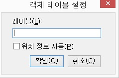
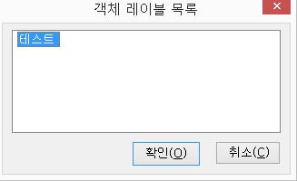

어떤 컨트롤에 포커스 되었을 때 컨트롤의 종류는 알려주지만 이름을 읽어주지 못하는 경우가 있습니다. 이런 경우 객체 레이블 기능을 사용하여 컨트롤에 이름을 붙일 수 있습니다.
이 기능을 사용할 수 있는 대표적인 예는 아웃룩의 메일쓰기 윈도우에서입니다. 메일쓰기 윈도우에는 이름을 읽어주지 못하는 편집창이 세 개 있는데, 각각의 편집창에 '받는이', '참조', '제목'라는 객체 레이블을 지정해 두면 편집창에 포커스가 될 때 레이블된 객체를 읽어주게 됩니다.
객체 레이블 설정 방법
① <Tab>키나 기타 방법을 이용하여 레이블을 붙일 객체에 포커스를 합니다.
② <Ctrl-Shift-=(이콜)>키를 눌러 객체 레이블 기능을 실행합니다.

③ 설정 대화상자의 '레이블' 편집창에 객체의 이름을 입력합니다.
④ '위치정보 사용' 체크상자를 필요에 따라 설정합니다.
'위치정보 사용' 옵션은 객체를 판단할 때 위치에 대한 정보를 사용할지 여부를 선택하는 것입니다. 기본은 해제되어 있으며 객체 레이블이 제대로 인식하지 않는 경우 선택하여 재등록합니다. PC Link 2000 프로그램 등에서 설정해 줍니다.
⑤ '확인' 버튼을 눌러 설정을 마칩니다.
현재 지정된 객체의 레이블 목록을 보여줍니다.
목록을 삭제하고 싶으면 원하는 레이블에서 <Del>키를 누르고 '예' 버튼을 선택해 주면 됩니다.
